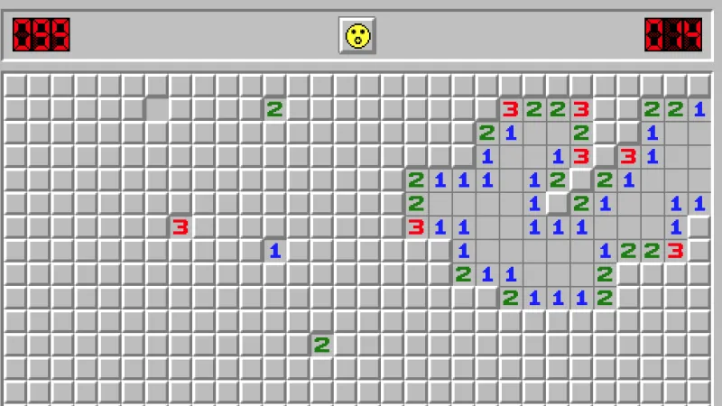
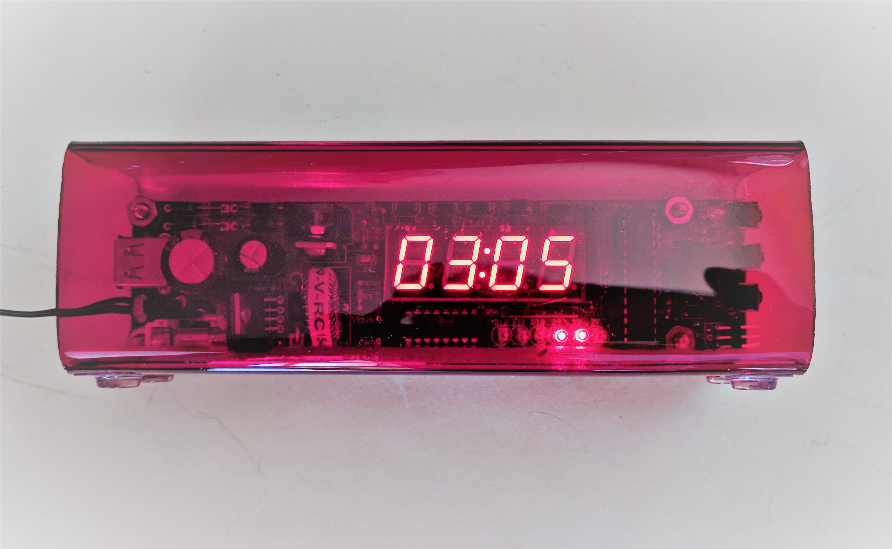

Simon Game
This is my current project that I am working on in a team of 5. We are a sub-section of the SBU Robotics Teams. We are using a STM32 microchip and programming in C. This will hone my embedded system programming skills.
Personal Website
You're looking at it! I used HTML, CSS and a ton of Googling to build this website from scratch. It's a continuous project as I continue to learn more Web Development skills.
So far I spent about 40 hours on this website. Next up to learn is JavaScript, to improve this website!


Signal Meter System
Designed a system that measures the precise frequency and period of a waveform using Embedded Microprocessor Systems Design Techniques. The device utilized an ATmega324A Microcontroller and takes in a signal as an input. The device used the ATmega324A's built-in Timer/Counters to determine whether measuring the period or the frequency will be more precise. A LCD DOG display was integrated into the design to display the period, frequency, and duty cycle. The device's software was developed in AVR Assembly language and utilized efficient management of subroutines and Interrupt Service Routines to measure the frequency with a precision of 0.01%.
Minesweeper Project
I used concepts such as object-oriented programming, recursion and basic data structures. Recreated the retro game using Java in Eclipse and implemented a GUI using JavaFX


DAC Saw-Wave Generator
Designed a system that generated a saw-wave with a Digital-to-Analog Converter using the Direct Digital Synthesis concept. The data path and controller units was implemented with the Field Programmable Gate Array(FPGA) Ice40HX1k on IceStick board and DAC MCP48901. The analog signal is approximated with an 8-bit DAC which communicates with the controller (Master) through a 3-wire link compatible with Serial Peripheral Interface(SPI). The DAC operates as a SPI Slave and the SPI Master that generates the chip select was designed using logic gates, flipflops and multiplexers.
PSpice was used to design and simulate the circuit. I manually soldered in electrical components on PCB board and programmed the micro controller in Atmel Studio using AVR Assembly. The alarm displays the hour and minutes using digits while the seconds was displayed with 8 LEDs using binary. The clock can be set in military mode and an alarm can be set.
Alarm Clock
